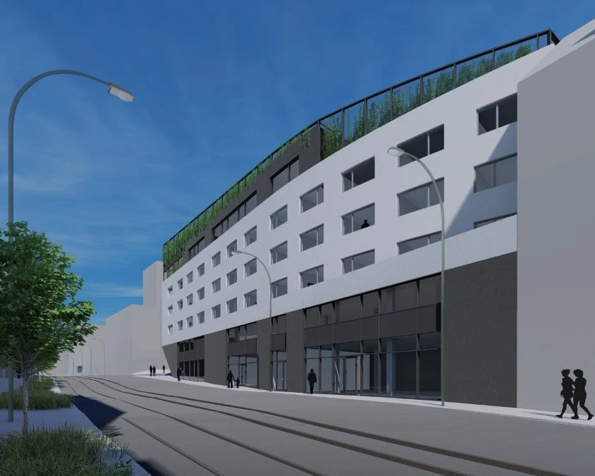
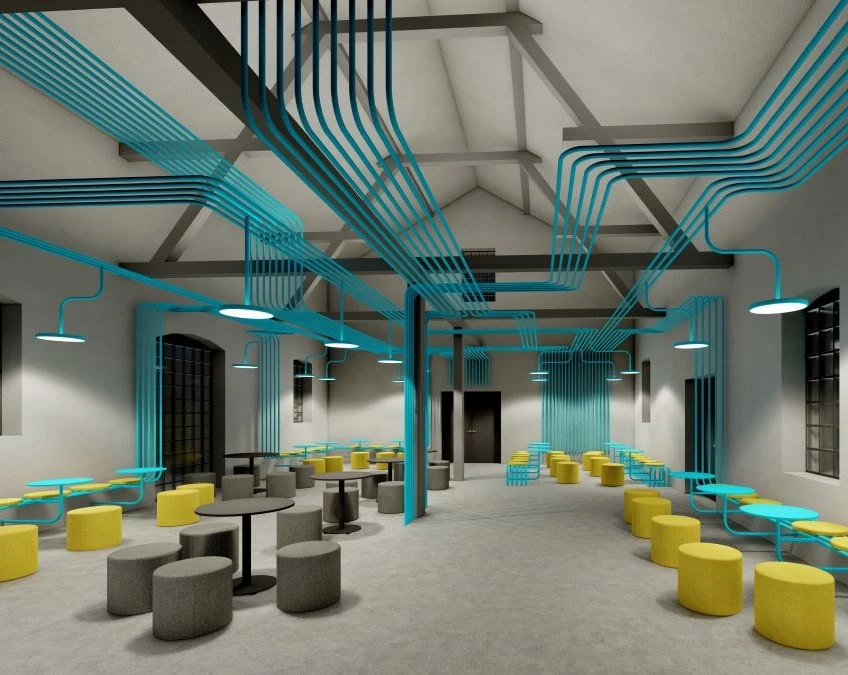

01 / 04
01
Rodinné bydlení /2026
Výměnek pro mladý pár
Zhotovení studie a DSP
Nové bydlení pro pár na pozemku se stávajícím RD.

Architektka se zkušenostmi s architektonickými studiemi, dokumentací staveb, rekonstrukcemi, pasporty, BIM a zpracování mračen bodů.
Ráda se učím a objevuji nové přístupy a procesy v architektonickém designu a také pracuji v týmu, kde můžeme sdílet zkušenosti a jiné úhly pohledu.
PortfolioJsem zvídavá, kreativní a mám ráda výzvy. Inspiraci a nadhled pro svou práci a tvorbu čerpám z přírody a cestování a dbám v ní na funkčnost, krásu a budoucnost.
Během studia i v rámci své profesní kariéry v projektovém ateliéru jsem se aktivně podílela na zpracování technické dokumentace pro realizaci staveb, tvorbě projektových studií pro mnoho typů bytových či rekreačních objektů, navrhování rekonstrukcí bytových prostor i větších budov, tvorbě vizualizací a práci s mračny bodů.
Mám hluboké znalosti práce s designovými a vizualizačními programy jako ArchiCAD, Lumion, InDesign, Photoshop a s programy pro správu mračen bodů.
CV
Mé portfolio zahrnuje širokou škálu projektových studií pro rodinné domy, bytové domy, objekty občanské vybavenosti, veřejné budovy a další. Mezi příklady z praxe patří studie pro nové projekty, rekonstrukce nebo přestavby domů a bytů a pasporty stávajících staveb.
Rodinné bydlení /2026
Zhotovení studie a DSP
Nové bydlení pro pár na pozemku se stávajícím RD.


Rodinné bydlení /2024
Zhotovení studie, DSP
Z původní studie pro rekonstrukci se muselo po průzkumu a zhodnocení stavu konstrukce ustoupit. Roubenka byla zbořena a na jejím místě vystavěna nová, která ctí původní podobu stavby.


Diplomová práce - České vysoké učení technické
Fakulta architektury
Projekt komunitního bydlení v husté městské zástavbě, který se skládá ze soukromých bytových jednotek a společných prostor pro celou komunitu a veřejnost. Návrh se nachází na trojúhelníkovém pozemku na konci městského bloku. Sousedí s dopravní tepnou Plzeňskou ulicí.


Vizualizace různých projektů pro firmu dodávající obklady budov.

Digitalizace výrobních hal na základě mračna bodů.
Pasport


Návrh interiéru restaurace v industriálním stylu s odkazem na původní vzhled a funkci budovy.
Studie


Pasport rekreačního objektu na základě zaměření a mračna bodů.




Soubor bytových domů pro seniory a sociálně slabé s komunitním zázemím a komerčními prostory v přízemí.
Studie